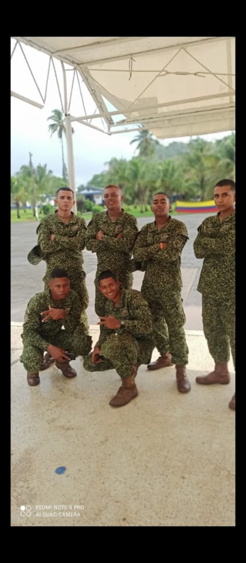
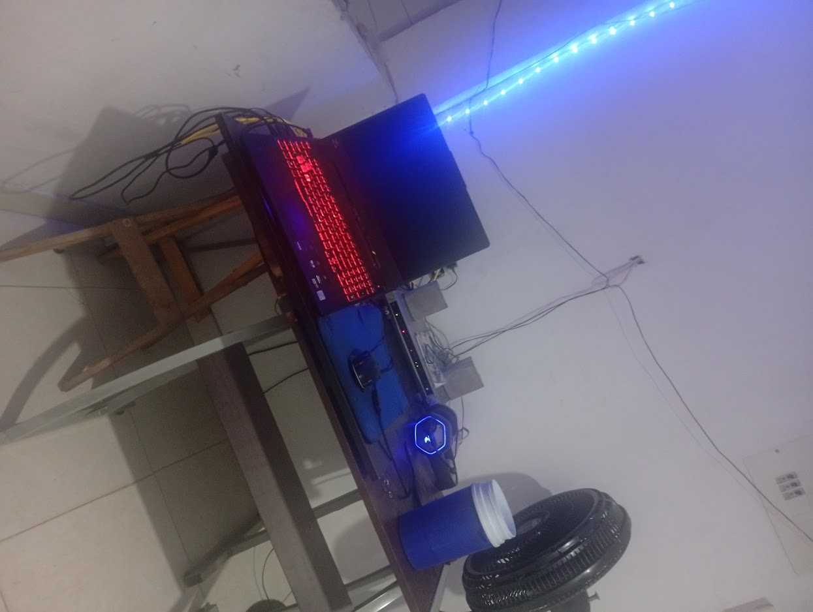

Trayectoria


Parte de mi formación personal estuvo marcada por disciplina y trabajo en equipo.
Barrancabermeja, Colombia
Técnico en redes y mantenimiento de computadores
Enfocado en desarrollo de software y seguridad tecnológica
Soy una persona autodidacta enfocada en construir soluciones tecnológicas reales.
Mi formación comenzó en redes y mantenimiento de computadores, donde desarrollé una base sólida en infraestructura tecnológica y resolución de problemas.
Actualmente estoy enfocado en aprender programación y desarrollo de software con el objetivo de crear herramientas y sistemas propios.

Parte de mi formación personal estuvo marcada por disciplina y trabajo en equipo.

Actualmente desarrollo mi proceso de aprendizaje en programación y tecnología.
Mi objetivo es construir una empresa enfocada en seguridad tecnológica.
Este portafolio documenta mi proceso de aprendizaje.
"Los éxitos más importantes se consiguen cuando existe la posibilidad de fracasar"
- Mark Zuckerberg